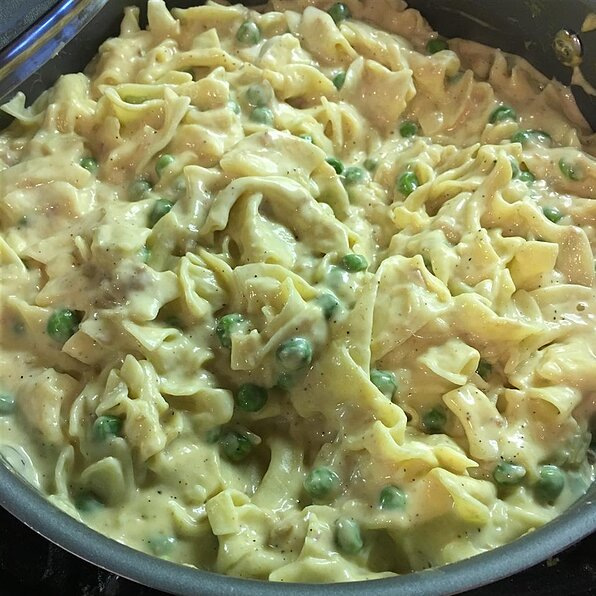

Tuna Casserole

Description
Quick and easy tuna casserole recipe by Jennie Ridgeway check it out
Ingredients
- 1 (12 ounce) package egg noodles
- 2 cups frozen green peas
- 2 (10.75 ounce) cans condensed cream of mushroom soup
- 2 (5 ounce) cans tuna, drained
- 1 onion, chopped
- 10 slices American processed cheese
- ground black pepper to taste
Steps
- Bring a large pot of water to a boil. Add noodles and frozen peas. Cook until noodles are al dente, drain well. Return noodles and peas to the pot.
- Mix soup, tuna fish, onions, processed cheese and pepper into the pot. Stir constantly until all of the ingredients are well mixed and the cheese has melted. Serve.